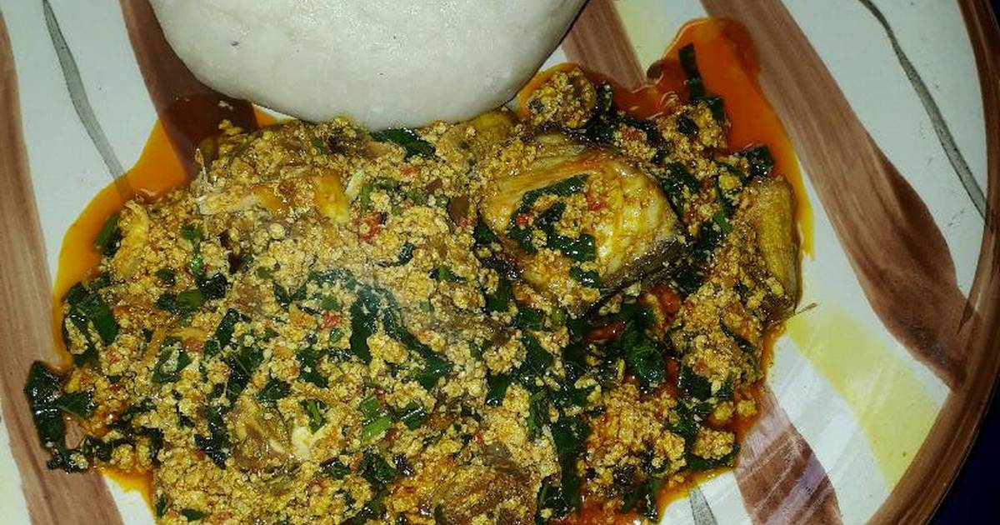

Egusi and Pounded Yam is my Favourite Food and I would be taking abouut the Receipe :
Tuber yam Yam flour Boneless chicken (1 Pound)- Cut in bite-size pieces Sliced Onion (1 Medium) Maggi Cubes (2 pieces) Chile peppers (2 fresh) Melon seeds (2 cups) Frozen Spinach thawed (340 g) Palm oil (1/2 cup) Vegetable oil (1 cup) Dried fish Salt Dried shrimp Crayfish